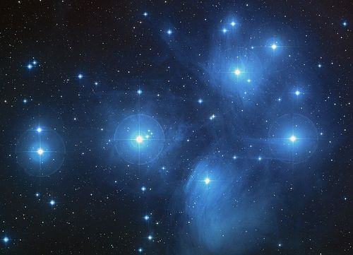
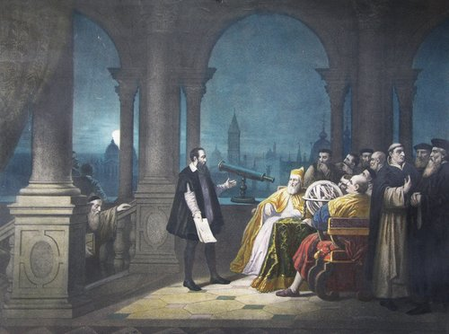
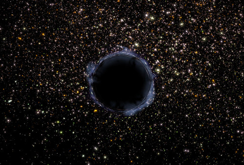

This chapter provides an overview of the key scientific discoveries that have led to our current understanding of the solar system and the Universe in general. The first part of the chapter covers early indigenous knowledge and is focused mainly on South African starlore. The second half of the chapter summarises the key astronomical discoveries made in Europe during the scientific revolution that were crucial in moving our understanding forward.
The main aims of this chapter are to ensure that learners understand the following:
Early cultures saw that the stars formed patterns in the sky called constellations, which often had stories and myths associated with them which were passed down from generation to generation.
Early cultures used the stars and constellations for timekeeping, direction finding and marking important religious events.
In more recent times, astronomers tried to make sense of the motions of the stars and planets in terms of a physical model of the solar system.
Copernicus suggested a Sun-centred model of the solar system in 1543. At the time, the generally accepted but incorrect model was an Earth-centred model.
Johannes Kepler discovered that the planets orbit around the Sun in ellipses rather than circles.
Galileo was the first person to use a telescope for viewing the stars and planets. He made many important discoveries using his telescope.
Newton finally explained why planets orbit the Sun, by putting forward his theory of gravitation.
The subsection on Modern Day Discoveries is included as an extension to this chapter to highlight more recent exciting discoveries in astronomy. The aim here is to show learners current research in astronomy and to demonstrate that scientific discoveries are continuously being made.
You can download an open source programme called Stellarium to render 3D photo-realistic skies in real time. It displays stars, constellations, planets, nebulae and others things like the ground, landscape and atmosphere. You could use this software in your classroom to demonstrate some of the concepts in this chapter, such as constellations and the movement of planets. bit.ly/1bHFb4d
3.1 Early indigenous knowledge (3 hours)
Tasks
Skills
Recommendation
Activity: The traditional and modern Xhosa calendar
Writing
CAPS Suggested
Activity: Class discussion about different calendars
Discussion, communicating
CAPS Suggested
Activity: Create your own legend
Drawing, writing
Suggested
3.2 Modern developments (3 hours)
Tasks
Skills
Recommendation
Activity: Explaining the motions of Mars
Drawing, observing, analysing
Suggested
Activity: Interview with a revolutionary
Working in pairs, researching, describing, analysing, (writing - extension exercise)
Suggested
Activity: Research a new discovery, invention or scientist
Researching, describing, writing
CAPS Suggested
Activity: Modern day astronomers: test your knowledge
Accessing and recalling information, communicating in written, oral, or graphic form
Optional
How did ancient astronomers use the motions of the Sun, Moon and stars for time keeping?
How did ancient astronomers view our place in the solar system?
Why did Copernicus think that the Earth and planets go around the Sun?
What discoveries did Galileo make using his telescope?
How did Newton explain Kepler's observations?
Early indigenous knowledge
In this section learners will discover how ancient civilisations viewed the stars and told stories about the stars which were passed on from generation to generation. They will also learn about the practical uses of stars for navigation and timekeeping. A special emphasis is placed on indigenous knowledge related to South Africa, however, some global comparisons are also made.
lunar calendar
solar calendar
constellation
star lore
Astronomy is one of the oldest sciences. Ancient civilisations around the world watched the night skies, noting the patterns they saw in the sky. These patterns are called the constellations. A constellation is any group of stars, as seen from Earth, that seems to form a pattern or picture in the sky. Different nations, cultures and people have given different names for the different star patterns and how they interpreted the patterns.
A well known example is the Southern Cross. Have a look at the photos which show the stars in the night's sky and how to view the pattern making up the cross.
This pattern of stars is the Southern Cross.The white lines show you how to view the Southern Cross.
You can find south using the Southern Cross constellation. Just extend the long axis of the cross four times and then go straight down to the horizon to find south.
The Southern Cross, Crux, and the two bright Pointer stars were used by farmers to mark the beginning of the planting season. According to Sotho, Tswana and Venda traditions, these stars were called Dithutlwa, meaning "The Giraffes". The bright stars of Crux are male giraffes, and the two Pointers are female giraffes.
Another example is the constellation Orion. It is named after Orion, a supernaturally, strong hunter in Greek mythology. This is one of the most recognised constellations around the world and many cultures have identified with it, each forming their own myths, many around a strong man or hunter.
The Orion constellation, seen here as the three bright stars in the middle making up Orion's belt and the four stars in each corner.This image shows how the pattern of stars in Orion make the image of the hunter.
The name planet comes from the Greek wordplanetes which means wanderer. Planets were called wanderers by the ancient Greeks as they move across the sky relative to the background stars.
People also watched the movement of the stars and planets across the sky marking the passage of time. Early cultures tended to identify the stars and planets they saw in the night sky with gods, spirits or animals. Ancient astronomers could tell the difference between stars and planets as the relative positions of the stars remain fixed in the sky whereas planets appear to move across the sky relative to the background stars. Not all the planets were known to the ancient people, rather only Mercury, Venus, Mars, Jupiter and Saturn. Uranus and Neptune were only discovered after telescopes were invented.
We have seven days of the week due to the seven moving celestial bodies known to the ancient people, namely, the Sun, the Moon, Mercury, Venus, Mars, Jupiter and Saturn.
Ancient civilisations like the Sumerians, Babylonians and Egyptians were responsible for introducing many of the constellations that astronomers use in the West today.
The Dunhuang Star Map from the Tang Dynasty in China (circa 700 AD) showing some of the constellations they observed.
Knowledge of these constellations were later passed on and added to by later civilisations like the ancient Greeks, Romans and Arabs. Native Americans, Aboriginal Australians, Mayans, Aztecs, Polynesians and ancient Chinese and Japanese peoples took a keen interest in the stars and had their own constellations and stories about the stars.
Astronomy played an important role in religion at the time, and the dates of festivals and holy days were fixed by the alignment of the stars or the phase of the Moon. In fact, the ancient Egyptian and Mayan pyramids and temples were designed in such a way that the Sun, Moon, stars and planets would be visible from the top or through certain windows at important times of the year, such as solstices or equinoxes.
The three Great Pyramids of Giza.
Some people believe that the builders of the ancient pyramids of Giza in Egypt placed them specifically to look the same from above as the three "belt stars" of the constellation Orion look from Earth.
Here in South Africa, early cultures also had their own constellations and stories which were passed down from generation to generation.
Early cultures used the stars for navigation. When travelling to new areas or over water they would have been unable to use familiar landmarks. When viewed from a particular location, a star always rises and sets in the same direction and follows the same path across the sky. We are familiar with this idea as the Sun is a star and we see it rise and set in the same direction every day. Early navigators learnt to use the directions of rising and setting stars to find their way.
Ancient manuscripts from Timbuktu in Mali in central Africa, documenting astronomical observations.
Early cultures also used the observed changes in the sky for timekeeping. A day was marked by the time between one sunrise and the next, just as it is today. The Moon's regular phases made it a very convenient "clock", and the time period between one New Moon and the next formed the basis of many of the oldest calendars.
In alunar calendar the time between one New Moon and the next is called a synodic monthand it is 29.5 days.
The lunar cycle was useful because it was predictable in the same way as day and night, however, each Moon cycle was also connected to a slightly different season with its own name and activities.Tally sticks made of bones with notches etched into them have been found dating as far back as 20-30 000 years ago and are believed to mark the phases of the Moon. Today we use a solar calendar, a calendar in which a year is defined by the complete revolution of the Earth around the Sun, but some religious calendars still use a lunar calendar. Accurate timekeeping was particularly important for farming communities because people needed to know when to plant their seeds and when to harvest their crops.
The Lebombo Bone was discovered in the Lebombo mountains between South Africa and Swaziland in the 1970s. It is a bone from a baboon used as a Tally Stick. It is roughly 35 000 years old. It is thought to have been used for tracking lunar cycles, due to the 29 marks on it.
The Pleiades, also called the Seven Sisters, is a bright cluster of stars. Traditional farming communities in South Africa used the Pleiades to help them plan their planting. Once the constellation was visible in the early morning in June they knew it was time to start planting their crops. The Khoikhoi call the Pleiades Khuseti or Khunuseh meaning "rain stars". They are called Selemela in Sotho and Tswana, Shirimela in Tsonga, Tshilimela in Venda, and isiLimela in Xhosa and Zulu. In Xhosa the stars are called the "digging stars". In East Africa and Zanzibar the Pleiades are called Kilimia, which also means "ploughing stars" or "
digging stars". Not only were the Pleiades used in Africa to mark planting season, they were also used by the ancient Mayans in Mexico and Central America to mark the start of their rainy season too.
The Pleiades or Seven Sisters star cluster. Although the constellation is known as the seven sisters, the star cluster actually contains hundreds of stars although only about seven are easily visible to the human eye.
Read more about traditional African star lore.bit.ly/1dL83Xl
The traditional and modern Xhosa calendar
In the Xhosa language, there are two ways of naming months, the modern and the traditional way. The modern names of the months are used in urban areas. However, in rural areas, in poetry, and particularly in the Eastern Cape the old names are still used. Look at the following table which shows these names.
You do not need to know the names of the months in Xhosa. This activity is for interest.
English
Modern Xhosa
Traditional Xhosa
Meaning of traditional name
January
uJanuwari
EyoMqungu
month of the Tambuki Grass
February
uFebhuwari
EyoMdumba
month of the swelling grain
March
uMatshi
EyoKwindla
month of the first fruits
April
uApreli
UTshazimpuzi
month of the withering pumpkins
May
uMeyi
UCanzibe
month of Canopus (Canopus is a star)
June
uJuni
Isilimela
month of the Pleiades
July
uJulayi
EyeKhala / EyeNtlaba
month of the aloes
August
uAgasti
EyeThupha
month of the buds
September
uSeptemba
EyoMsintsi
month of the coast coral tree
October
uOktobha
EyeDwarha
month of the lilypad
November
uNovemba
EyeNkanga
month of the small yellow daisies
December
uDisemba
EyoMnga
month of the mimosa thorn tree and Simba (the lion)
QUESTIONS:
Do you see that the modern Xhosa names are derived from the English names. The traditional names for the months mostly come from the names of plants and flowers. Why do you think certain months are given specific plants or flower names?
This corresponds to when these plants appear or grow as the seasons change throughout the year.
Why do you think August is called EyeThupha, the month of the buds?
This is because it is the start of Spring and the buds on plants start to appear at this time.
Why is June called Isilimela? Hint: Read the preceding text in your workbook.
Isilimela means 'month of Pleiades'. Pleiades is the group of seven stars which appears in the sky during June.
What time of year does Isilimela correspond to? What does this signal to traditional farmers?
It corresponds to winter, when farmers must start planting their crops so that they are ready to harvest when summer comes.
What month are you born in? Write down the traditional Xhosa name below.
Learner-dependent answer.
Class discussion about different calendars
Remind learners of the rules for debating which is that each one must be given a chance to speak and respond and learners' viewpoints must all be respected. This activity will help learners to appreciate different cultures and religions.
You can also get learners from different religions or cultures in your class to explain the different festivities, holidays or special events which they observe throughout the year.
The calendar the we use is the Gregorian calendar and is the most widely used around the world. It is also known as the "Western calendar" or "Christian calendar". It was named after the man who first introduced it in February 1582: Pope Gregory XIII. The term New Year's Day for the 1 January was adopted in Western Europe in the Middle Ages. Before this, the Roman Julian calendar (named after Julius Caesar) was used.
The Roman influence in the Gregorian calendar explains why the months of July (Julius) and August (Augustus) are named after Roman emperors.
The Islamic year begins on the first day of the month of Muharram. It is counted from the year of the Hegira (Anno Hegirae), when Muhammad emigrated from Mecca to Medina (16 July 622 AD).
The Jewish calendar represents the number of years since they believed the world was created. This is calculated by adding up the ages of people in the Bible. So when someone of Jewish beliefs says that the year is 5763, it means 5763 years from the creation of Adam.
INSTRUCTIONS:
Around the world, and within South Africa, there are different calendars which are in use. Do you think it would just be easier to have one calendar?
Discuss this as a class.
You could do this as a class debate with teams debating the pros and cons of the concept.
In a debate, remember to be respectful to others' opinions and allow everyone a chance to speak.
As well as their practical uses in timekeeping, stories surrounding the Sun, Moon and constellations have been passed down from generation to generation. These mythical stories are called star lore. For example some believed that after sunset the Sun travelled back to the east over the top of the sky and that the stars are small holes which let the light through. Others said that the Sun is eaten each night by a crocodile and that it emerges from the crocodile each morning.
Read more about some South African star myths.bit.ly/14K09Lf
Being the most prominent object in the night sky, the Moon also has many stories and legends associated with it. If you look closely at the Moon you can see that it has lighter and darker patches. The pattern formed by the light and dark patches had been interpreted differently by different cultures: some see a rabbit, others a buffalo, others a "Man in the Moon". One urban legend that some people still incorrectly believe is that the the Full Moon is linked to insanity. There is no evidence to support the claims of increased birth rates, admissions to psychiatric hospitals, traffic accidents, homicides or suicides during a Full Moon.
Lunacy and lunatic are derived from the Latin name for the Moon, Luna.
The Khoikhoi called the Moon kham, or khab meaning "the Returner". The Khoikhoi also considered the Moon to be "the Lord of Light and Life" and would sing and dance at times of New and Full Moon. In /Xam San star lore, there is the following story:
The Moon is a man who has made the Sun angry. The Sun's sharp light cuts off pieces of the Moon until almost the whole of the Moon is gone, leaving only one small piece. The Moon then pleads for mercy and the Sun lets him go. From this small piece, the Moon gradually grows again until it becomes a Full Moon.
What do you think the San were observing which they explained with this story?
The San were observing the phases of the Moon. Throughout the month we only see certain parts of the Moon due to the relative position of the Sun, Earth and Moon and how much light is reflected from which part of the Moon.
The Xhosa considered the time of New Moon to be a time of inaction. When it reappeared as a crescent in the evening sky, it was cause for celebration. Important events were scheduled to take place around the time of Full Moon.
The Milky Way is also a prominent feature of the South African nighttime sky visible away from cities. Ancient peoples in South Africa described the Milky Way as as a footpath across the sky, along which the ancestor spirits walked. In San starlore, the Milky Way was created by a girl who scooped up a handful of ashes from a fire and flung them into the sky. This made a glowing path along which people could see the route to return home at night.
We will learn more about our galaxy, the Milky Way, and other galaxies, next year in Gr 8.
The Milky Way seen from Sutherland, Northern Cape, by Janus Brink (SAAO/SALT).
Meteors (also called shooting stars) and comets also feature heavily in starlore around the world. In most cultures meteors and comets were regarded as signs of important events. In Tswana starlore, a very bright meteor is an indication of a good season ahead. However, the .Xu San saw a meteor as an evil spirit racing across the sky to cause mischief among people. The /Xam San, thought that a meteor announced the death of one of them. In Xhosa starlore, a comet, Uzatshoba, is associated with bad luck, wars and death. There was also a strong belief that comets predicted the death of a chief. The Sothos called comets naledi tsha mesela, and the Zulus called them inkanyezi enomsile, which means "stars with tails".
Create your own legend
In this activity learners will draw their own imaginary constellation (some examples are included for inspiration). They will then make up a story to go along with their constellation.
MATERIALS:
pictures of famous constellations for inspiration
Some examples of constellations in the sky.
INSTRUCTIONS:
Make up your own pattern of stars and draw them in the box below.
Make up a legend (story) to go along with your new constellation.
Draw your new constellation pattern the box below.
Write your legend here.
Curious about the universe, but don't know where to start? Have a look at this step-by-step guide to becoming an awesome amateur astronomer.bit.ly/1aqKQHX
Modern developments
This section highlights significant discoveries about the nature of our Universe and the technology used to make those discoveries. The details about modern telescopes are kept brief, as this subject will be covered in more detail in the Grade 8 Earth and Beyond Strand: Early viewing of space and telescopes. Additional activities which are appropriate for this section depending upon access include visits to science centres, science museums, planetariums, observatories and amateur astronomy clubs.
The earliest astronomers had no sophisticated observatories. They studied the stars and planets using just their eyes. This is called naked eye observing. The South American Mayans, ancient Egyptians and ancient Chinese built some of the first observatories. These are special buildings used for studying the stars. These ancient observatories had no telescopes inside.
Nowadays modern observatories contain large telescopes with extremely sensitive cameras and instruments mounted on the telescopes. Astronomers use computers to move the telescopes and operate the instruments. As technology has progressed, we have been able to see a lot more and have learnt a lot more about the Universe.
X-ray telescopes like NASA's Chandra and the European Space Agency's XMM-Newton collect X-ray light emitted from objects at millions of degrees Celsius. These telescopes are placed in space because our atmosphere absorbs all the X-rays from space.
Chichen-Itza observatory in Mexico. This ancient observatory was used by the Mayans, although it had no telescope inside.
South Africa currently has the largest optical telescope in the Southern Hemisphere, the Southern African Large Telescope (SALT). SALT is located just outside Sutherland in the Karoo where the skies are clear and very dark. SALT's main mirror is a hexagon shape measuring 11 x 9 metres across and is made up of 91 individual smaller mirrors which are slotted together. Its mirror is so large so it can collect a lot of light from very faint and distant objects. SALT is used to study a variety of objects including asteroids, stars and galaxies.
South Africa will also be hosting part of the Square Kilometre Array (SKA), the world's largest radio telescope, scheduled to be completed in 2024. The SKA will be located in the Karoo near the town of Carnarvon, far away from big towns and cities where there is little radio interference. When complete the telescope array will be 50 times more sensitive than any other radio telescope to date. The array will contain 3000 radio dishes as well as other types of radio detectors.
Two thirds of the SKA will be built in Africa (mostly in South Africa), while the remaining third will be built in Australia.
What the SKA will look like in the Karoo.
An array means a large number of the same items. For example, when the desks in your classroom are all lined up neatly, we can call that an array of desks.
Astronomers plan to use the giant telescope to test the laws of gravity using black holes. They will also peer at some of the most distant clouds of gas in the Universe which formed before the first stars. Astronomers will also study how galaxies form, and change over time, and perhaps also detect life elsewhere in the Universe.
We still have so much to learn about our Universe, we only understand about 5% of the content of our Universe presently. SALT and SKA will help us understand far more about our Universe, so much is still to be discovered.
Let's look at some of the highlights in our journey of scientific discovery so far.
The discovery that the Sun is at the centre of the solar system and not the Earth
Early astronomers such as the ancient Greeks believed the Earth was at the centre of the Universe, with the stars and planets orbiting around the Earth.
The ancient Greeks thought that the Earth was at the centre of the universe and believed that the planets, Sun and background stars all orbited around the Earth.
By carefully watching the motions of the planets in the sky, the Greeks saw that most of the time the planets travelled west to east across the sky relative to the background stars. However, they occasionally reversed their direction and moved backwards, from east to west relative to the background stars. The ancient Greeks' ideas about the Earth-centred Universe worked when the planets were travelling in the same direction as the background stars, but could not account for the their retrograde (backwards) motion.
Motion towards the east is called direct orprograde motion. Backwards motion is called retrograde motion.
In 1543, Nicolaus Copernicus, a Polish mathematician and astronomer, published his book called De revolutionibus orbium coelestium, or in English, On the Revolutions of the Celestial Spheres. In it he correctly deduced that the Sun, rather than the Earth, was at the centre of the Solar system. He based his deductions on many of his own and other people's observations. Copernicus correctly ordered all the planets known at the time in increasing distance from the Sun. In his model, all the orbits of the planets were circular, so in this way, it was similar to the model of the ancient Greeks. But how did Copernicus's new deduction solve the problem of Mars' backwards motion? Let's do an activity to find out.
In this activity learners will discover how the retrograde (backwards) motion of Mars can be explained in a Sun-centred model of the solar system.
MATERIALS:
pencil/pen
ruler
Note that inner orbit is that of Earth (green) and outer is that of Mars (red). The dashed line are the background stars.
INSTRUCTIONS:
Draw a line from each Earth position through the Mars position for the same month. Extend the line approximately 1 cm past the dashed curve on the right which represents the background stars.
Place a dot at the end of the line and label the dots in order. If a new line crosses one already drawn, draw the new line slightly longer and place the dot slightly farther away than you did for the other lines. The line for January is already drawn as an example. The dots represent the positions where an observer on Earth would see Mars for the month indicated on the diagram.
Start with the dot number 1, and carefully connect the dots in order. This connecting line represents the path Mars appears to follow on the sky as viewed from Earth.
Answer the questions below.
QUESTIONS:
How does Mars move around the Sun between January and August?
Mars orbits around the Sun in an anti-clockwise direction.
To an observer on Earth, what movement does Mars appear to experience during that time period?
It appears to initially be moving in an anti-clockwise direction, then it appears to turn around and travel in a clockwise direction before changing direction again and appearing to move in an anti-clockwise direction.
During which months does Mars appear to be moving backward in its orbit?
During May, June and July.
Carefully observe what is happening to Earth and Mars in their orbits when Mars seems to loop "backward." What causes Mars to seem to move backward in its orbit?
The Earth "overtakes" Mars in its orbit around the Sun.
The Earth moves faster than Mars in its orbit and catches up with Mars at point (b) before overtaking Mars at point (d). As the Earth overtakes Mars, Mars appears to travel backwards on the sky, even though Mars is not really changing direction in space.
How can objects appear to move backwards when they are not really moving backwards? Let's do a test right now. Hold your arm outstretched in front of you and hold up your first finger. Cover or close your left eye and note where your finger appears against the background. Now cover or close your right eye instead. What do you notice about the position of where your finger appears? It moved to the right didn't it? But did you really move your finger? No, it just appeared to move because of your change in perspective.
[Did you know] The idea of a Sun-centred solar system was proposed as early as about 200 B.C. by Aristarchus of Samos (Samos is an island off the coast of Turkey). However, the idea did not survive long because the famous Greek Aristotle did not believe in a Sun-centred solar system.
The discovery that the planets' orbits are elliptical
Ensure that learners are familiar with the term ellipse before starting this section. If necessary spend five minutes reviewing the properties of ellipses before continuing.
Johannes Kepler was a German astronomer and mathematician. He spent ten years trying to explain the motion of Mars across the sky in detail. He could only get his model of the solar system to fit the observations of the planets' motions if he assumed that rather than moving in a circle around the Sun, the planets all orbited in ellipses (ovals). He discovered that the true shape of the planets' orbits is elliptical.
Johannes Kepler.
The Earth travels faster in its elliptical orbit when it is closer to the Sun than when it is farther away. This is because the gravitational force of attraction between the Earth and Sun is stronger when the Earth is closer to the Sun. This is true of the orbits of all planets around the Sun.
The Earth and the other planets in our solar system orbit around the Sun in an ellipse.
Galileo's discoveries using his telescope
Galileo Galilei was an Italian physicist, mathematician and astronomer. He built his first telescope in 1609 and was the first astronomer to use a telescope. In 1610 he published a book called the Sidereal Messenger, listing the discoveries he had made using his telescope.
Galileo displaying his telescope.
Galileo discovered the four largest moons of Jupiter (which are now called the Galilean moons). Over several nights he watched them move and realised that they were actually orbiting around Jupiter.
The four largest moons of Jupiter, left to right in increasing distance from Jupiter: Io, Europa, Ganymede and Callisto.
He also found that Venus has phases just like the Moon (and just like all planets). He discovered that the Moon has craters and that the Sun has dark spots which are called sunspots. These imperfections on the Moon and Sun discredited the belief held by the Catholic Church at the time that the heavens were perfect and unchanging.
The Catholic Church allowed Galileo to conduct his research, as long as he did not openly publicise his findings. In 1632 Galileo angered the head of the Catholic Church (the Pope) when he published a book in which he stated that the Earth was moving around the Sun. He was put on trial and found guilty of heresy. He was first imprisoned and later placed under house arrest.
Heresy is having a belief or opinion that was against the official teachings of the church at the time.
Although Galileo wasn't appreciated during his lifetime, his experimental and mathematical approach to physics was revolutionary and way ahead of his time.
Newton discovers gravity
Isaac Newton was an English physicist and mathematician and is considered one of the greatest scientists of all time. He derived mathematical laws to describe the motions of objects but his greatest discovery was that of the force of gravity. In 1687 he published a book called Philosophae Naturalis Principia Mathematica, or in English: Mathematical Principles of Natural Philosophy,in which he explained his ideas about the motions of objects and gravity.
There is a famous story which says that Newton was sitting under an apple tree when an apple fell on his head and he began to think about gravity and falling objects. The apple didn't really land on his head but he did watch an apple fall and began to wonder why apples always fall down. He suggested that it was the force of gravity that caused apples to fall.
Learn more about gravity and general relativity (video)bit.ly/1fpDg6L
Amazingly, he made the mental leap from Earth to space and realised that it was the force of gravity that was holding the Moon in its orbit around the Earth. According to Newton, gravity is the reason that objects fall to the ground when dropped and why planets orbit the Sun and why moons orbit planets. Up until Newton no one had been able to explain what held the Moon and the planets up in their orbits.
Sir Isaac Newton aged 46.
Some famous quotes from Sir Isaac Newton: "I can calculate the motions of the heavenly bodies, but not the madness of people." "Plato is my friend - Aristotle is my friend - but my greatest friend is truth."
Interview with a revolutionary
In this activity learners will work in pairs to role play. One learner should imagine that they are an important early astronomer and the other learner will play the part of a journalist. The "journalist" will interview the "astronomer" in order to find out what important discoveries the astronomer has made. You may also ask the journalists to report back their findings to the class. If time permits you could ask the learners to switch places and therefore conduct two interviews in total (choosing a different astronomer each time). If you want to add a writing task to this activity you could also ask the "journalists" to write a newspaper report, detailing their interviewee's discoveries.
MATERIALS:
reference materials about famous historical astronomers.
INSTRUCTIONS:
Work in pairs in this activity. One of you will play the role of an early famous astronomer and the other will play the role of a journalist.
Astronomer: Pick which famous astronomer you are going to be and answer the questions your partner asks you.
Journalist: Ask the "astronomer" what they have discovered and why their discoveries are important.
Modern day discoveries
Scientists are continually making new discoveries, and with every new discovery comes a new question.
A short documentary about the search for habitable planets.bit.ly/1fpDqei
Research a new discovery, invention or scientist
In this activity learners must conduct some research and then write a summary about a new discovery in astronomy, an invention in astronomy, or a particular astronomer that interests them. They can use the example material provided in this chapter, or they can conduct research online or at a local/school library. Decide how learners must present the information, either as a research project, an oral presentation or a poster.
INSTRUCTIONS:
Research either a recent discovery made in astronomy, or an invention used in astronomy or about a famous astronomer.
You can choose to write about one of the examples provided in the text below, or you can choose your own example.
Your teacher will inform you how you must present your work.
Some example discoveries:
Exoplanets - An exoplanet is a planet orbiting around a star other than our own Sun. The first exoplanet was discovered in 1992 when several planets were found orbiting around a small, rapidly spinning star. As of June 2013, 890 exoplanets have been discovered and more and more are being found all the time.
This image compares the smallest known exoplanets orbiting outside the solar system, to our own planets Mars and Earth.
Planet Quest - the search for another Earth.bit.ly/1be0oDn
Citizen science - help look for other planets.bit.ly/1dL91Tt
Black holes-Black holes are super-dense regions in space which have very strong gravity, so strong that not even light can escape from them. Although you cannot see a black hole directly astronomers know they exist because of their pull on objects close to them. If you were to fall into a black hole feet first, you would be pulled apart like a piece of spaghetti.
A black hole in the universe.This artist's drawing concept shows a massive black hole ripping a star apart over time. On the left, the yellow, sun-like star comes too close to the black hole, and is stretched apart (middle yellow blob), until it is ripped apart. Some these remains of the star swirl into the black hole (blue-white cloudy ring on the right).
The Expansion of the Universe-In 1929, astronomer Edwin Hubble made the astonishing discovery that our universe is expanding. Looking at galaxies outside our Milky Way galaxy, he found that all the galaxies he looked at were moving away from the Earth, and that the most distant ones were moving away fastest. This implies that every galaxy is moving away from every other galaxy. In fact the space between galaxies is itself expanding.
A galaxy is a collection of stars held together by their gravitational pull, such as the Milky Way galaxy. We will learn more about galaxies next year in Gr 8.
As the Universe expands, galaxies move further and further apart.
Look at the photographs below and match the face to the description of the person.
Stephen Hawking, Cecilia Payne-Gaposchkin, Albert Einstein.
Descriptions:
Stephen Hawking, a famous British physicist diagnosed with ALS, a form of Motor Neuron Disease, shortly after his 21st birthday. He is famous for his work on black holes.
Cecilia Payne-Gaposchkin, the astronomer responsible for discovering that stars are made up mostly of hydrogen and helium.
Albert Einstein, a German physicist famous for his work on gravity and the nature of space and time.
The concept maps in your workbooks were created using an open source programme. You can download it from this link if you want to use it to create your own concept maps for your other subjects.bit.ly/16spQTO
Summary
People have watched the stars for thousands of years. They have created stories about the stars and constellations which have been passed on from generation to generation.
Early scientists believed that the Earth was at the centre of the solar system.
Copernicus found that the observations of planetary motion could be more easily explained if the Sun were at the centre of the solar system.
Galileo was the first astronomer to use a telescope and found that Jupiter had moons orbiting around it.
Newton discovered gravity and explained that planets and moons are held in orbit by the force of gravity.
New discoveries are continuously made using modern telescopes.
Concept map
Throughout this year we have been looking at how to produce concept maps after each chapter. This is now your chance to make your own concept map. The concepts in this chapter about the development of astronomy can easily be divided into two main themes. Firstly, about "early indigenous knowledge" and then about the "modern developments" that people have made and are still making. The concept map has been started for you. Copy this into your notebook to first practice drawing your concept map. Once you have your final version, with the help of your teacher, draw it into the space below to act as the summary for this chapter.
This is the first time the learners have to produce most of the concept map on their own. Although throughout the year we have been looking at and completing concept maps at the end of each chapter, this is quite a difficult skill to master. You will need to guide your learners through this process. It is important to do this last concept map with your learners as it will help with the development of this skill which will be very useful in high school. Remember, learners how to learn.
A version of a completed concept map is provided for you to reference when going through the process with your learners. Encourage them to first design their own concept maps on some scrap paper or in their notebooks. You will need to walk around the class during this time to help them and lead them through the process. For example, for the development of "early indigenous knowledge", ask questions such as:
Where did this early indigenous knowledge come from? (from people)
How did it come about it? (by observing patterns in the movement of the stars, Moon and Sun)
What did they use the patterns for? (to develop calendars, measure time, find direction, etc.)
Also bear in mind that concept mapping is a subjective task - different learners may come up with different ways of presenting the content, and this should be encouraged, not penalised. Once the learners have had a chance to design their own concept maps, you can then do it as a class activity on the board. Ask for their input into what the next "bubbles" should be and why.
If learners are battling with this task, you can use the reference concept map given here to guide them through the process and still ask the same questions listed above. Once you have a concept map that you are all happy with, then the learners can draw it into their own books. Please do not just copy the concept map below onto the board and instruct learners to copy it into their workbooks.They (and you as a teacher) need to go through the process together so that the learning cycle for concept mapping is completed.
Teacher's version:
Revision questions
What motions could the ancient Greek model of the solar system not explain? [2 marks]
The ancient Greek model could not fully explain the motions of the planets. It could explain the forward or prograde motions, but could not explain the backward or retrograde motions where the planets appeared to move backwards relative to the background stars.
How did Copernicus's model of the solar system differ from the ancient Greek model of the solar system and how was it similar? [2 marks]
Copernicus's model model was similar in that it assumed that the planets orbited in a circle. It was different however in that it assumed correctly that the Sun is at the centre of the solar system rather than the Earth. In Copernicus's model all the planets including the Earth orbit around the Sun. In the ancient Greek model the planets and the Sun orbit around the Earth.
Explain in your own words why Mars sometimes appear to move backwards relative to the motion of the background stars? [3 marks]
Planets move in a direct (eastward) motion around the Sun. The Earth revolves around the Sun more quickly than Mars does as its orbit is smaller and on the inside of Mars's orbit. As the Earth moves faster than Mars at some point in its orbit, it catches up and then passes the slower-moving Mars. When the Earth overtakes Mars, Mars appears to be moving backwards relative to its usual motion around the sky. In this retrograde motion, neither the Earth or Mars are actually moving backwards; it only appears that way.
List two different discoveries that Galileo made using his telescope. [2 marks]
The Galilean moons of Jupiter orbiting Jupiter, craters on the Moon, sunspots on the Sun, and the phases of Venus.
Do planets travel around the Sun in circles or ellipses? [1 mark]
Planets travel around the Sun in an elliptical orbit.
How does the speed of a planet vary as it travels around the Sun? [2 marks]
A planet speeds up in its orbit as it approaches the Sun and slows down in its orbit as it gets further away from the Sun.
What practical uses for the stars were used by early cultures? [2 marks]
The stars were used for finding direction and timekeeping. They were used to mark special holidays and were also used by farmers to indicate when to plant their seeds.
How did early San people explain the Milky Way? [2 marks]
In San starlore, the Milky Way was created by a girl who scooped up a handful of ashes from a fire and flung them into the sky.
Does the phases of the Moon have an effect on human behaviour? [1 mark]
No, the idea that the Moon affects people's behaviour is an urban legend.